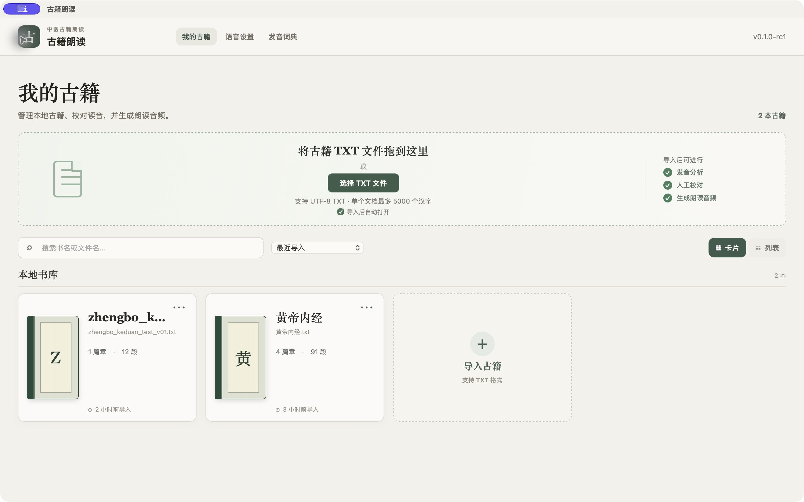
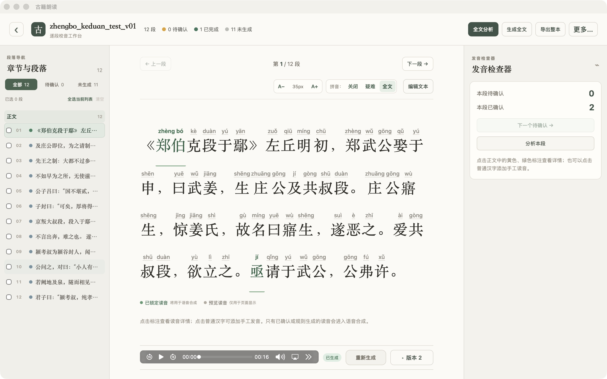
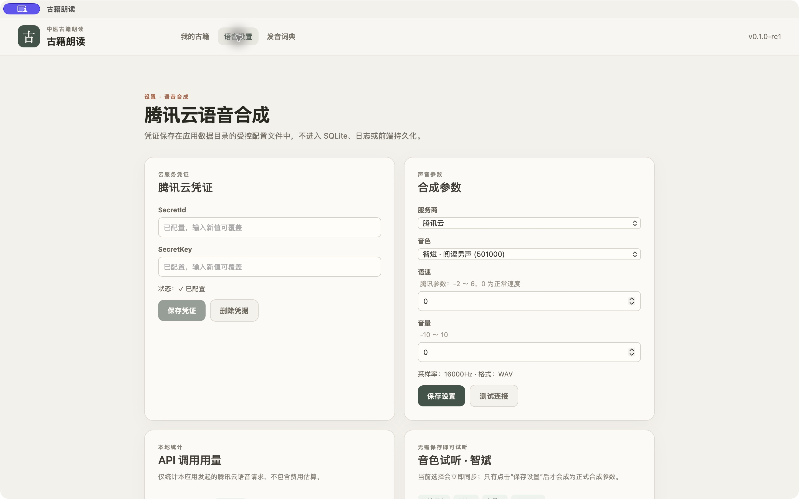
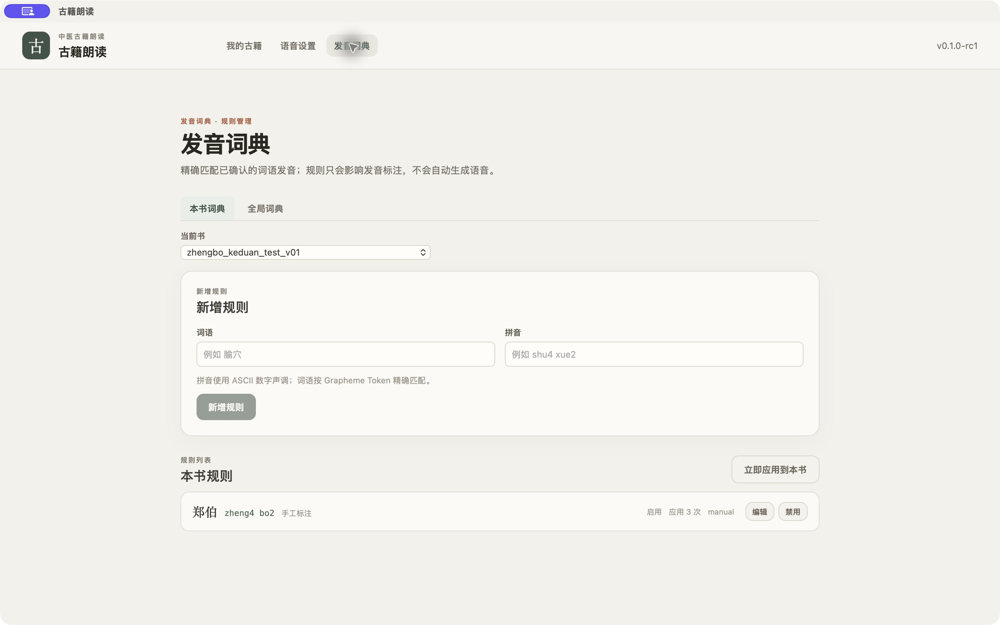

导入古籍
准备 UTF-8 编码的 TXT 文件，在“我的古籍”点击“选择 TXT 文件”。单个文档建议控制在 5000 个汉字以内，导入后应用会按篇章和段落整理正文。
桌面版 · 候选版本
AncientMedicalTTS 用来整理中医古籍的朗读。导入 TXT，按段查看文字和拼音，确认发音后生成音频，资料保存在自己的电脑上。
当前版本 v0.1.0-rc2 · 支持 macOS 和 Windows
使用说明 · 更新于 2026 年 9 月 25 日
第一次使用时，按下面的顺序操作即可。文字和发音资料都保存在本机，什么时候生成语音由你决定。
准备 UTF-8 编码的 TXT 文件，在“我的古籍”点击“选择 TXT 文件”。单个文档建议控制在 5000 个汉字以内，导入后应用会按篇章和段落整理正文。
打开古籍后点击“全文分析”或“分析本段”。页面中的拼音是阅读提示，黄色标记表示待复核，绿色标记表示已经锁定的读音。
点击正文中的标记，在右侧检查器查看上下文和候选读音。输入 ASCII 数字声调，例如 shu4 xue2，点击“确认”。只有“已锁定读音”会进入语音合成，“预览读音”只用于页面显示。
在“语音设置”中填写自己的腾讯云凭证，选择音色、语速和音量，先用“音色试听”确认效果。回到正文点击“重新生成”，生成后可直接播放并切换历史版本。
需要改动朗读内容时点击“编辑文本”。可以修改朗读文本、在光标处分段、与相邻段落合并，也可以取消某段的“参与朗读”。导入原文始终保留，不会被覆盖。
确认词语后，可以在“发音词典”建立本书规则或全局规则。规则只会复用已经确认的发音，不会自动生成语音；规则改变后，需要重新生成受影响的音频。
界面示例
下面的截图来自 macOS 真机测试，Windows 版本的操作流程基本相同。




主要功能
适合需要反复核对字音、整理段落，并逐步生成古籍朗读音频的场景。
导入 UTF-8 TXT 文件，按篇章和段落整理正文，原始文字单独保留。
查看疑难字和词语的读音，手动确认或修改后再生成语音。
使用腾讯云语音合成生成片段，支持试听，并按正文顺序导出完整音频。
下载
当前提供 v0.1.0-rc2。安装包已经包含应用需要的 Worker 和 FFmpeg，用户电脑不需要另外安装 Python 或 FFmpeg。
适用于 M1、M2、M3、M4 等 Apple Silicon Mac。
下载 macOS ARM64 ZIP · 下载后解压，再将应用拖入“应用程序”适用于 Intel 处理器的 Mac。
下载 macOS Intel ZIP · 下载后解压，再将应用拖入“应用程序”普通用户建议使用 EXE 安装包，也可以选择 MSI。
二选一即可 · Windows x64下载遇到问题，或需要查看校验信息，请打开 v0.1.0-rc2 发布页。
使用前请知道
应用不会附带腾讯云凭据。需要使用语音合成功能时，请在应用的“TTS 设置”中填写自己的 SecretId 和 SecretKey。凭据保存在本机应用数据目录，不上传到这个网站。